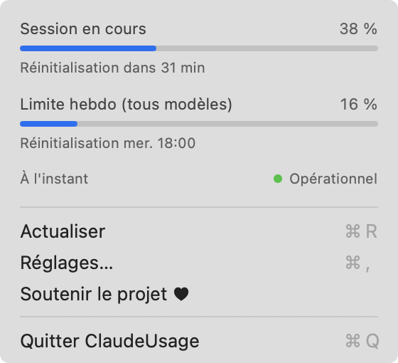

Votre consommation Claude Code,
dans la barre de menus du Mac.
Vos limites de session et de semaine en un coup d'œil, sans demande de mot de passe et sans consommer de token.
curl -fsSL https://raw.githubusercontent.com/Throover/ClaudeUsage/main/install.sh | sh
Aucune demande de mot de passe
L'app ne lit jamais votre trousseau ni votre jeton de connexion. Elle interroge Claude Code lui-même avec /usage.
Aucun token consommé
Dans nos tests, consulter votre consommation a utilisé 0 token, sans appel au modèle.
Limites de session et de semaine
La fenêtre de 5 heures, la limite hebdomadaire et leurs réinitialisations, actualisées toutes les 5 minutes.
Une ligne dans le terminal
En option, votre consommation sous la zone de saisie de Claude Code, avec vos rappels de raccourcis toujours visibles.